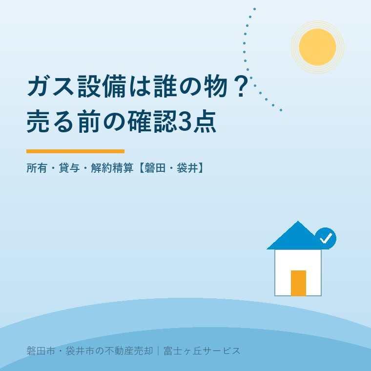
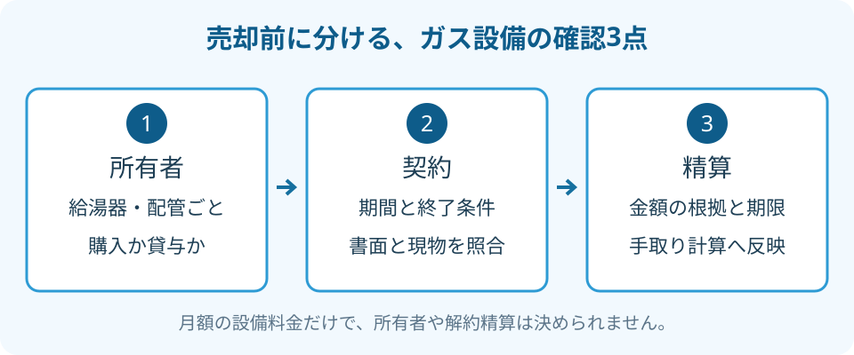

家の売却とプロパンガス設備費｜確認3点
2026年9月25日｜カテゴリ：売却費用・設備

この記事の要点
Q. 実家の給湯器は家と一緒に売ってよい物ですか？
家の売却前は、プロパンガス設備の所有者、貸与契約、解約時の精算を確認します。設備料金の表示だけで所有権や残額は決まりません。販売店から契約書と明細を取り寄せ、引渡し条件を整理します。磐田市・袋井市・森町では、富士ヶ丘サービスのような地域密着の会社に相談するという選択肢があります。
大石浩之（磐田市／不動産業）です。宅地建物取引士として、実家を売る前の設備費を整理します。家の外壁に付いた給湯器は、持ち主の物に見えます。けれど、設置されている場所と所有者は同じ話ではありません。家族が購入したのか、ガス販売店から借りているのか。買主へ「そのまま使えます」と話す前に、書類で確かめたい部分です。
三部料金制は、設備の所有権を示す制度ではない
静岡県LPガス協会「LPガスの料金について」は、基本料金、従量料金、設備料金からなる三部料金制を説明しています。2025年4月の改正施行による表示義務も掲載しています。ページの更新日は表示されておらず、本記事では2026年9月25日に内容を確認しました。
経済産業省の2025年4月2日発表では、請求時に3つの料金へ分けて通知する義務は、新規契約と既存契約の両方が対象です。一方、ガス消費と無関係な設備費用などの計上禁止は、新規契約に係る料金へ適用すると説明しています。表示のルールと、何を料金に含められるかのルールは分けて読む必要があります。
私は、設備費が請求書のどこにあるか分かる点を評価します。毎月の支払いに疑問があれば、家族が販売店へ質問する足場になるからです。ただし、請求書を見ただけで「借りている設備はない」「解約精算もない」と結論に飛ぶのは早い。月額料金の透明化を、設備契約の清算まで済んだ話に置き換えないことです。
| 表示される料金 | 協会の説明の要旨 | 売却前に別途確かめること |
|---|---|---|
| 基本料金 | 使用量によらない固定的な費用 | 停止・解約の日と最終請求 |
| 従量料金 | ガス使用量に応じた料金 | 引渡し前の使用分の精算 |
| 設備料金 | 貸付設備などに係る料金 | 対象設備の所有者と契約条件 |
賃貸住宅向けには消費設備費用の計上にも別の制限があります。親が住んでいた持家の売却へ、賃貸住宅の説明をそのまま当てはめないでください。制度から確認できることと、目の前の契約で決まることを分けます。
確認1：給湯器と配管の所有者を分けて聞く
プロパンガス設備の所有者は、給湯器、コンロ、配管などの設備ごとに確認します。建物に固定されているから自己所有だと扱わず、購入時の請求書や設備の貸与に関する書面と現物を照合してください。
「ガス設備は誰の物ですか」という一括の質問では、回答の対象が曖昧になります。「この給湯器は誰の所有ですか」「この配管はどの範囲が対象ですか」と聞き分けます。型番の分かる写真と設置場所のメモがあれば、販売店にも対象を伝えやすくなります。
私が売主側で揃えたいのは、設備名、所有者、確認した書類、回答日を並べた一覧です。買った物と借りた物を同じ設備表に書くとしても、状態は区別します。不明な物を空欄にすると、後で「自分の物だと思っていた」という話に戻りかねません。「所有者確認中」と書く方が誠実です。
使わない設備を片付ける場合も、撤去業者へ渡す前に権利を確認します。家具を残す話と同様、残置物と現況での引渡しでは、何を残し、誰が処分するかを合意します。借りている可能性のある物まで、売主の判断だけで処分する段取りにしないことです。

確認2：貸与契約の期間と終了条件を読む
設備の貸与契約は、設備を借りる条件を定めた書面です。販売店へ契約書や明細の写しを依頼し、契約者、対象設備、契約日、期間、終了時の扱いを確認します。「設置のときに払っていない」という記憶だけでは、無条件で譲り受けたことにはなりません。
契約書が見つかったら、現在の設備と同じ物かも確かめます。給湯器の交換前の書類なのか、交換後にも続く契約なのか。別紙や更新書面があるなら一緒に取り寄せます。販売店の回答と手元の書面が違う場合は、その違いを残して再照会します。
私は、販売店を替える方が得かどうかを、月額料金だけで決めることには迷いがあります。使い続ける期間と、設備の扱いで負担が変わるからです。売却を予定する家では、誰が次に住み、何を使うのかも未定です。まず現在の契約を確かめ、買主の希望を聞いてから選択肢を並べます。
売主が同じ販売店の利用を続けたいと思っても、買主が同じ希望とは限りません。継続、設備の返却、買取りなどを選べるかは、対象設備と契約内容を示して販売店へ聞きます。売主だけで「買主が引き継ぐ」と約束せず、仲介会社を通じて双方の合意を整えます。
書面に設備費の残額らしい数字があっても、そのまま確定請求額とは扱いません。どの日を基準にした数字か、終了日が変わればどう計算するかを確認します。古い書面に書かれた額と、引渡し予定日の精算額を区別するためです。
確認3：解約精算は、売却の手取りへ入れる
家の売却に伴うプロパンガスの解約精算は、販売店に金額の有無、根拠の条項、計算の内訳、支払時期を照会します。静岡県LPガス協会の料金案内には、個別の家の解約精算額は掲載されていません。この記事でも一律の残額や相場は提示しません。
私はこう考えます。手取りの欄に、未確認をゼロ円で埋めない。売買代金から設備費が差し引かれるのか、別の日に支払うのかで、家族が用意するお金も変わります。金額が分からない段階は「照会中」と記し、回答を受けてから手取り表を直す。それが、売主に対して責任のある数字の出し方です。
販売店には「引渡し予定日に契約を終えると、何の費用がいくら発生しますか」と聞きます。ガス使用分、設備に関する精算、撤去に関する費用が提示されたら、それぞれ分けた明細を求めます。税込か税抜か、見積りの有効期限、追加作業の条件も一緒に確認してください。
回答が電話だけなら、担当者名と日付を記録し、同じ内容を書面やメールで受け取ります。金額だけのメモでは、後から設備の買取り代金だったのか、撤去費だったのか区別できません。契約内容に疑問が残る場合は、承諾する前に販売店へ根拠を確認し、必要に応じて法律の専門家に確認を。
手取りの考え方は、売却代金から何が引かれるかで整理しています。設備費を仲介手数料などへ混ぜず独立した欄にすると、誰への支払いかが残ります。買主と費用負担を交渉する場合も、総額だけでなく対象設備と作業を示すことが先です。
磐田・袋井の実家で、引渡し前に揃える書類
磐田市・袋井市の実家がプロパンガスを使っている場合、遠方の家族は請求書と設備契約書を先に探すと、現地へ行く日の作業を絞れます。販売店の名前を思い出せなければ、検針票などの連絡先を確認します。設備の銘板を見るために機器を分解する必要はありません。
親が施設へ入居した家では、家族が照会や解約を行える権限も確認します。契約者本人の意思を確かめ、本人に代わって手続きするための書類は販売店へ聞いてください。相続や判断権限が絡む個別の問題は、専門家に確認を。
給湯器に補助金を使った記録がある場合は、設備契約と別に整理します。給湯設備の補助と売却時の確認も参照してください。ガス販売店との精算が済むことと、補助の手続きが不要になることを同じ扱いにはしません。
- 請求書、設備契約書、購入・交換時の書類を集める。
- 所有者と終了時の費用を設備ごとに照会する。
- 仲介会社と引渡し条件、最終確認日を決める。
富士ヶ丘サービスは、介護施設の運営から不動産事業を始め、磐田・袋井で介護と実家の売却を一体で相談できます。家族が困らない売却のため、私はまず「何を渡せるのか」「何を清算するのか」を揃えるよう案内します。今日、販売店を替えたり売却を決めたりする必要はありません。契約書の写しを頼むところからで十分です。
よくある質問
プロパンガスの月額料金と、売却時の設備の扱いは別々に確認します。
- 設備料金が0円なら、解約時も費用はかかりませんか？
- 設備料金の表示だけで、解約時の費用がゼロとは判断できません。月額請求の内訳と、設備の貸与契約や精算条件は別に確認します。販売店へ対象設備、契約条項、算定日、計算の内訳を照会してください。請求がある場合も、その金額の妥当性をこの記事から断定はできません。争いがある場合は専門家に確認を。
- 家を売れば、買主が同じガス会社を使うことになりますか？
- 売却だけで、買主が同じ販売店や設備契約を引き継ぐと決めないでください。現在の契約内容と設備の所有者を確認し、買主の希望を仲介会社経由で聞きます。継続、返却、買取りなどの可否と条件は販売店へ照会し、費用を誰が負担するかも合意します。売主だけで買主の契約を約束しないことです。
- 契約書が見当たらないときは、どこへ聞けばよいですか？
- 請求書や検針票などから現在の販売店を確認し、設備の貸与に関する契約書や明細の写しを依頼します。給湯器、配管などの設備ごとに所有者と契約番号を照合してください。親が契約者なら本人の意向や照会の権限も確認します。書類がない段階で自己所有と扱わず、不明点は仲介会社と専門家に確認を。

この記事を書いた人：大石浩之（磐田市／不動産業・宅地建物取引士）
富士ヶ丘サービス株式会社。介護施設の運営から不動産事業を始め、磐田市・袋井市・森町で、介護と相続、実家の売却を一体で相談できる窓口を設けています。家族が困らない売却のため、資料と現地の条件を一件ずつ整理します。著者プロフィール
参考にした公式情報
2026年9月25日確認。
本記事は2026年9月25日時点の公開情報と筆者の意見です。制度・数値・手続は変更されることがあります。個別の取扱いは担当窓口へ、税務・登記・相続の個別判断は税理士・司法書士・弁護士などの専門家に確認を。